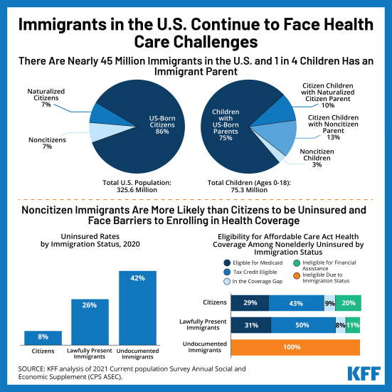

The U.S. Healthcare system is something that is brought up a lot. Whether on discussions on the reasons behind many debts for Americans, the untimely deaths for minority groups, or the barrier of access that prevent some from even receiving this care. Many people get hurt, sick, or injured on the daily. Then why does the system in the U.S. seem to work against those who are already suffering? Throughout this website we will examine the ways the U.S. Healthcare system often fails for minority groups, racial, sexual, gender, and those who are suffering economically. Like a small umbrella, the healthcare system seems to be designed for a specific group of people and all those who don’t fit within that small archetype are left to deal with the consequences. Because of this, the U.S. Healthcare system very well goes against the definition of social justice- by enforcing a system that often excludes many people economically, socially, and unfairly. Hopefully, by advocating for these groups who suffer under this unjust system, we can bring awareness and change. Through advocacy or protest we can find lawmakers who can try to enact change for citizens who shouldn’t have to jump through legal hoops and financial struggles to just live. By sharing the knowledge of these communities, we can bring light to something as complicated as healthcare and make it accessible to those who wish to enact change
Learn More
Sahat Khan-Disabled Individuals
Kevin Lee-Healthcare, or the Lack thereof
Jesus Martinez- Racial Minorities, Coding the Webpage
Siersha Miller- How gender minorities are affected under the the US healthcare system
Monica Holland- Sexual minorities
Jeronimo Batsley- Healthcare and Medicare Inequalities Towards Non-Citizen
By: Sahat Khan The core mission of public health, which is to improve the health of all populations,3,4 is increasingly framed in terms of health disparities or health inequities. Across the multiple definitions of health disparities and inequities,5–8 there is general agreement that health disparities refer to differences in health outcomes at the population level, that these differences are linked to a history of social, economic, or environmental disadvantages, and that these differences are regarded as avoidable. Within a disability context, determining disparities is complex, in that it requires considering which observed differences in health status are avoidable, and which may be unavoidable because they relate directly to the underlying health condition that led to the disability. Disabled people in the American healthcare system often face multiple barriers that make it difficult for them to receive the healthcare services they need. One major barrier is discrimination, where healthcare providers may consciously or unconsciously treat disabled individuals differently due to their disability. For example, providers may assume that a disabled individual's symptoms are related to their disability rather than conducting a thorough evaluation. Another challenge that disabled individuals face in the American healthcare system is limited accessibility. Despite the passage of the Americans with Disabilities Act (ADA) in 1990, many healthcare facilities remain inaccessible to individuals with disabilities. Stairs, narrow entrances, and inaccessible medical equipment are examples of such impediments. In some circumstances, providers may lack the necessary knowledge and resources to meet the specific needs of disabled patients, such as providing sign language interpreters or accessible communication equipment. Furthermore, many disabled individuals also experience inadequate insurance coverage, which can limit their access to the healthcare services they need. This could be due to insurance policy limitations or a lack of providers who accept their insurance. As a result, many disabled people may postpone or forego required healthcare procedures owing to financial barriers. Additionally, they may face difficulties in accessing appropriate care due to the complexity of their conditions and the limited availability of specialists trained to treat them. These inequalities can result in delayed diagnoses, untreated conditions, and poorer health outcomes for disabled individuals compared to non-disabled individuals. Adults with disabilities are 4 times more likely to report their health to be fair or poor than people with no disabilities (40.3% vs 9.9%). Addressing these inequalities in the American healthcare system requires a comprehensive approach that involves improving accessibility and eliminating discrimination, as well as increasing education and awareness among healthcare providers. There is also a need to address systemic biases within the healthcare system, which can contribute to the unequal treatment of disabled individuals. By addressing these issues, we can work towards ensuring that all individuals, regardless of their disability status, have access to high-quality healthcare services that meet their unique needs.
This video refrences the health inequalities for disabled people
Citation: Krahn, Gloria L, et al. “Persons with Disabilities as an Unrecognized Health Disparity Population.” American Journal of Public Health, U.S. National Library of Medicine, Apr. 2015, https://www.ncbi.nlm.nih.gov/pmc/articles/PMC4355692/. “Health and Health Care Disparities among People with Disabilities.” Disability Rights Education & amp; Defense Fund, 20 Mar. 2023, https://dredf.org/public-policy/health-access-to-care-old/health-and-health-care-disparities-among-people-with-disabilities/.
Healthcare, or the lack thereof
By:Kevin Lee For most Americans, healthcare is a scary concept. 13.2% of all U.S. adults indicated so, reporting they did not understand the healthcare system either “at all” or “very much” in a Nation Health Survey in 2019. This lack of knowledge and awareness means not many people know about the minorities struggling under this system, or even those who don’t even get the benefits of the system. Uninsured people often face a unique challenge in terms of accessing healthcare services, like the lack of access to preventive care. Preventative care, like the name implies, focuses on preventing easily avoidable illnesses and risks. Without this insurance coverage, individuals are less likely to receive regular check-ups, screenings, and vaccinations, leading to higher rates of chronic diseases that could have been prevented through early detection and treatment. (Artiga 2022) Uninsured individuals also often delay seeking medical attention, leading to severe health issues, worsened problems, and increased healthcare costs. With no clear access to affordable care, uninsured Americans are more likely to rely on emergency rooms, which can result in higher out-of-pocket expenses and add to the already hefty financial burdens. The financial burdens and struggles do not stop for these uninsured individuals, as they are billed the full cost of medical services which can be an absurd amount. A report found that uninsured individuals paid, on average, nearly three times as much for hospitalizations than those with private insurance. (Artiga 2022) For those who are of lower income, and already working hard to earn as much as they can, these sorts of medical debts can leave them unable to survive financially. The previously mentioned potential for worsened conditions also can severely impact an individual’s ability to work and earn money. This already stressful situation can be worsened when taking into account access to prescription medications. This is a challenge for uninsured individuals, with the cost of prescription drugs being unreasonably expensive, making it difficult for people to afford the medications they need to live their daily lives. There is also intersectionality between marginalized identities and the uninsured. There are disparities by race and ethnicity, with Black and Hispanic individuals more likely to be uninsured than white individuals. There also exists a higher barrier to government-assisted healthcare, especially for states that have laws that haven’t expanded to include most Americans. With low-income citizens often consisting of this population, the idea of moving to another state is riddled with costs and expenses that are unfeasible. The struggles of uninsured Americans in the healthcare system are ongoing and heartbreaking. These individuals often lack access to preventive care, experience delays in seeking medical attention, face higher healthcare costs, and struggle to afford prescription medications. These issues easily overlap and can mean life or death when the inevitable medical debt occurs. These prohibitive price points punish a percentage of America’s population for the imaginary crime of having a lower income and not fitting into complex and exclusionary guidelines on a state-by-state basis. It’s essential for policymakers and healthcare providers to address these issues and work towards ensuring that all Americans have access to affordable, quality healthcare.
The Kaiser Family Foundation is an invaluable resource that helps point toward issues among the uninsured and the causes behind many. This includes “The Uninsured: A Primer" by Kaiser Family Foundation (2021).
This video can also highlight the reasons behind the insane out-of-pocket costs uninsured individuals may struggle with.
Citation: Samantha Artiga,“Health Coverage by Race and Ethnicity, 2010-2021.” KFF, 12 Apr. 2023, https://www.kff.org/racial-equity-and-health-policy/issue-brief/health-coverage-by-race-and-ethnicity/.
Racial Minorities have health disparities which in definition “is a difference in which disadvantaged social groups such as the poor, racial/ethnic minorities, women and other groups who have persistently experienced social disadvantage or discrimination systematically experience worse health or greater health risks than more advantaged social groups”(Medicare). This is a way to say that there are certain groups that get discriminated against in the healthcare system, this makes it difficult for people to get healthcare benefits. Not only does their race take into consideration getting healthcare also their ethnicity, education, income and geography. In a study shown in 2011 it states that the Healthcare department would do significantly better for the system to be taken down but since the companies are greedy about the healthcare system, the system would still be in place. Even if the system was taken down, there would still be the case of the quality of the healthcare, for instance they could receive poor quality of health care because of the place they are at or their poor education that they receive during school. Not only do Adults suffer from this but also children, the children are the last thing that needs to be discriminated against by the healthcare system. Children are the future of the planet if they live on a world where they are being discriminated against due to them being judged by their skin, then the world is just corrupted by greed. In conclusion, we need to rewrite the healthcare system not only to people who are in the health disparities, but also to children who are in this system as well. The quicker the system gets taken down the quicker everyone can get healthcare and less fear of paying a huge amount for something small.
Citation: “Racial and Ethnic Health Care Disparities.” Center for Medicare Advocacy, 27 July 2017, https://medicareadvocacy.org/medicare-info/health-care-disparities/. Munshi, Kiraat D, et al. “Disparity Implications of the Medicare Medication Therapy Management Eligibility Criteria: A Literature Review.” Expert Review of Pharmacoeconomics & ; Outcomes Research, U.S. National Library of Medicine, Apr. 2013, https://www.ncbi.nlm.nih.gov/pmc/articles/PMC3623017/.
How gender minorities are affected under the the US healthcare system
By:Siersha Miller -Gender inequality in the United States healthcare system greatly affects the care of women and transgender individuals. This problem is well known to the world and often is recognized by the discrepancy between pain management and healthcare professionals not taking certain individuals as seriously when it comes to their treatment plans. Healthcare is a very vital part of every person's lives and is a part of their rights as a US citizen under the Universal Declaration of Human Rights. This declaration states that everyone is to be granted the right to universal health no matter the person's race, ethnicity, sex, gender, economic class, caste, disability, age, or location (Ostlin and Sen, 2008). However, because of the social norms in our society and implicit biases placed on people, multiple people of subgroups of the categories listed under the declaration are heavily discriminated against in the healthcare setting. Women and transgender individuals specifically being one of them. -Women in society are often seen as less capable and more as objects rather than subjects of their own wills and desires.The same holds true for transgender individuals, as they are often discriminated against in almost every social setting, but especially healthcare (Ostlin and Sen, 2008). These things create a perception that they do not deserve or aren’t as important as men when it comes to their treatment and pain management. Because women suffer from menstrual pains and childbirth, there is a societal idea that women can handle more pain than men because they are made to, but in reality there is no difference in pain threshold or tolerance when all biases are removed (Samulowitz et al., 2018).Transgender individuals are often not given the same access to medications such as testosterone and estrogen because they are not deemed “necessary” by society. These are important things to understand because when other disadvantaged subgroups intersect with gender, the consequences of the biases in healthcare are exacerbated to a detrimental effect (Ostlin and Sen, 2008). For example, a lower middle class, black, transgender woman would be seriously disadvantaged when accessing american healthcare because she would be part of 4 marginalized groups, making her much more likely to not be taken as seriously or have adequate access to what she needs. -Creating a gender equitable environment in healthcare is important because it is the basis of everyone’s quality of life and access to a good and healthy lifestyle. The elimination of gender biases will propel our society into an overall more gender equitable future in other aspects of life in addition to healthcare.
Citation: Anke Samulowitz, Ida Gremyr, Erik Eriksson, Gunnel Hensing, "“Brave Men” and “Emotional Women”: A Theory-Guided Literature Review on Gender Bias in Health Care and Gendered Norms towards Patients with Chronic Pain", Pain Research and Management, vol. 2018, Article ID 6358624, 14 pages, 2018. https://doi.org/10.1155/2018/6358624. G Sen. and P. Ostlin, “Gender Inequality in Health: why it exists and how we can change it.” Global Public Health, 2008; 3(S1): 2008 Taylor & Francis. https://doi.org/10.1080/17441690801900795.
Sexual Mniorities
By:Monica Holland In the healthcare system, sexual minorities receive a very high level of discrimination and stress which results in poor health. These days sexual orientation/gender is all people talk about, some are confused but others are talking to tear others down. Why do people discriminate when they don’t know the person or situation? Healthcare works with sexual minorities on a daily basis. Lesbians have a higher prevalence of obesity and gay men are more likely to have hypertension.(Chandra L. Jackson, 17 august 2016). Others need to think to themselves, what if people were causing me that much stress that led to a medical crisis? It wouldn’t be very fair but that is what LGBTQ people have to deal with. When it comes to health insurance, sexual minority women are more likely to experience lack of insurance. The healthcare environment isn’t positive already so they have double the disadvantage in health care. (Kesha Baptiste-roberts, 2018 Mar 1). Several studies also show that they are more likely to delay care because of those factors. Our system is so broken that we can’t even provide medical necessities to other men and women. These statistics need to change or it will keep happening and end up even worse than it is right now. Sexual minorities will have different health needs like AIDS but we should respect their life and not judge or deny needed medical attention because people are different.
To get a Better understanding on this topic, you can watch this youtube video that expands this topic.
Citation: Baptiste-Roberts, Kesha, et al. “Addressing Health Care Disparities among Sexual Minorities.” Obstetrics and Gynecology Clinics of North America, U.S. National Library of Medicine, Mar. 2017, https://www.ncbi.nlm.nih.gov/pmc/articles/PMC5444328/. Jackson, Chandra L., et al. “Sexual Orientation Identity Disparities in Health Behaviors, Outcomes, and Services Use among Men and Women in the United States: A Cross-Sectional Study - BMC Public Health.” BioMed Central, BioMed Central, 17 Aug. 2016, https://bmcpublichealth.biomedcentral.com/articles/10.1186/s12889-016-3467-1.
Healthcare and Medicare Inequalities Towards Non-Citizens
By: Jeronimo Batsley In today's United States of America there is a lot of inequality in health care, medicare and insurance towards immigrants. In 2021 there were about 21 million non-citizens in the United States which is about 6% of the total population of the country, that includes lawful immigrants and undocumented immigrants as well. With that being said 25% of lawful immigrants are uninsured and uncovered and 46% of undocumented immigrants are as well. (Health Coverage and Care of Immigrants, Published: Dec 20, 2022). Health care inequalities towards immigrants have various factors, including legal status, language barriers, cultural differences, and discrimination.Immigrants' legal status is one of the biggest obstacles for them. This is because already being an undocumented immigrant you are scared of deportation and legal troubles if you get caught with anything, hence asking or trying to get medical insurance or cover with the government is a huge risk because it could cause several problems. Language barriers also present a significant obstacle for immigrants seeking health care. Many healthcare providers in the United States only speak English, which can make it difficult for non-English speakers to communicate effectively with their doctors or understand important health information. This can lead to misdiagnosis or inadequate treatment, which can end up harming the patient's health.Much like the language barriers cultural differences can also play a role in healthcare disparities for immigrant populations. Some immigrants may come from countries where healthcare practices and beliefs differ significantly from those in the United States. This can lead to misunderstandings between patients and healthcare providers, which can impact the quality of the care that they get. The last but not least of the obstacles is the bias and the discrimination towards immigrant populations by others.Some healthcare providers may hold negative attitudes towards immigrants, which can lead to poorer quality care or even outright denial of care.Overall, addressing health care and Medicare inequalities towards immigrant populations in the United States will require a very in depth and multi faceted approach that includes legal reforms, language and cultural understanding training for healthcare providers, and efforts to combat discrimination and bias.
Here is a chart that shows the inequalities of USA today.

Citaion: Dec 20, 2022. “Health Coverage and Care of Immigrants.” KFF, 30 Mar. 2023, https://www.kff.org/racial-equity-and-health-policy/fact-sheet/health-coverage-and-care-of-immigrants/#:~:text=Uninsured%20Rates%20by%20Immigration%20Status& ;text=uninsured%20than%20citizens.-,Among%20the%20nonelderly%20population%2C%20one%20in%20four%20(25%25)%20lawfully,compared%20to%20their%20citizen%20counterparts.